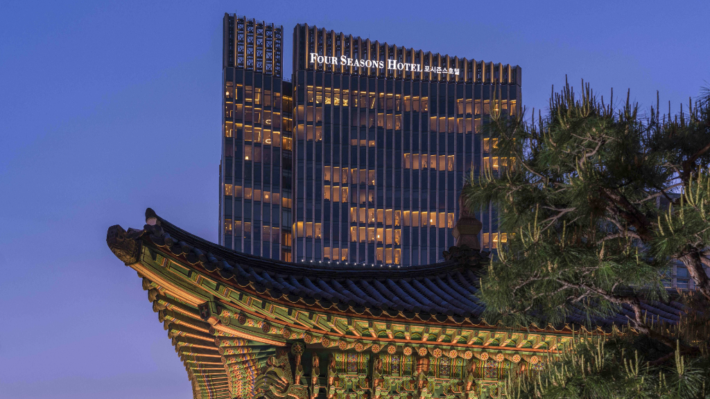

Four Seasons Hotel Seoul: A Refined Base for Exploring Central Seoul
At a glance: Four Seasons Hotel Seoul is a luxury stay at 97 Saemunan-ro in Jongno District, close to the Gwanghwamun and central Seoul area. It suits travelers who want polished hotel comforts and a convenient base for sightseeing, business, or a special occasion. Google lists it at 4.6 out of 5 from 7,409 reviews; ratings and review totals can change.
Seoul can feel like several cities at once: palace courtyards and old lanes sit alongside office towers, busy shopping streets, and contemporary dining. Four Seasons Hotel Seoul offers a comfortable starting point for getting to know that mix. Its address places it in Jongno, a central district with major civic landmarks and historic attractions within reach.
This is a high-end hotel rather than a budget base, so it will be most appealing to visitors who value attentive service, an upscale setting, and the convenience of returning to a full-service property between outings. The location is also useful for travelers balancing sightseeing with meetings in central Seoul.
Why stay in this part of Seoul?
The hotel is on Saemunan-ro, in the Gwanghwamun area. Nearby landmarks include Gwanghwamun Square and Gyeongbokgung Palace, while the broader Jongno district offers a natural route into Seoul’s history and city life. Depending on your pace and chosen route, you can combine a palace visit with a walk through the surrounding central neighborhoods.
Central location does not mean every attraction is right outside the lobby. Seoul is large, and traffic, walking pace, weather, and the entrance you choose can all affect how long a journey takes. Use the map link below to plan specific routes, and check current transit information when you decide where to go. For a first visit, grouping nearby sights on the same day can make the city easier to navigate.
The setting also works well for visitors who want the option of quieter time indoors. After a full day in the city, a luxury hotel can provide a more relaxed retreat than a small room in a busier nightlife district. If you are choosing the property for a particular facility, dining venue, or treatment, confirm its current availability and details directly with the hotel before booking.
What to expect from the hotel
Four Seasons Hotel Seoul is positioned as a full-service luxury property, with accommodation and hotel facilities intended to make staying in as comfortable as going out. Room categories, views, services, and facilities can vary, so review the official website for the latest descriptions rather than assuming every feature is included with every booking.
For international guests, one practical advantage of a major hotel is having a staffed point of contact for common travel questions. You can ask the hotel about luggage arrangements, accessibility needs, special requests, and the best way to reach a destination. Policies and services may differ by booking and date, so confirm details in advance—especially if you are arriving late, traveling with children, or need a particular room setup.
Dining is another reason some travelers choose a hotel of this type, but restaurant offerings, menus, and operating schedules can change. Check the hotel’s current dining information if a meal is central to your plans. Seoul has a wide range of restaurants beyond the property, so staying here need not limit you to hotel dining.
Planning a stay
Think about your itinerary before choosing this hotel. It is a strong fit if you expect to spend time around Gwanghwamun, Jongno, or other central sights, or if you want a comfortable base with hotel services. If your plans focus on nightlife, shopping, or a different part of the city, compare locations and journey times rather than choosing by hotel name alone.
For a balanced day, set aside time for one major historic attraction and leave room to explore the surrounding streets at an unhurried pace. Seoul’s weather can affect how pleasant long walks feel, so check the forecast and keep an indoor alternative in mind. The hotel’s location makes it practical to return between activities, but confirm directions and any transit changes on the day.
When booking, compare room descriptions and cancellation terms carefully, and check what is included in the rate. Do not assume that breakfast, access to a particular facility, or flexible arrival and departure times are automatically part of every reservation. The hotel’s official website is the best place to verify current policies and contact the property about specific needs.
Good to know
- Address: 97 Saemunan-ro, Jongno District, Seoul.
- Best for: Travelers seeking an upscale, full-service stay in central Seoul.
- Location planning: Check routes to each attraction; “central” does not mean every destination is a short walk away.
- Before booking: Verify current room inclusions, facility access, dining details, and policies directly with the hotel.
- Review snapshot: Google rating is 4.6 from 7,409 reviews at the time of the supplied verification data. Individual experiences vary, and figures may change.
Frequently asked questions
Is Four Seasons Hotel Seoul a good base for sightseeing?
It can be a convenient base for central Seoul, particularly the Gwanghwamun and Jongno areas. Check routes to attractions farther across the city before setting your daily schedule.
Is the hotel suitable for business travelers?
Its central Jongno address and luxury-hotel positioning may suit visitors combining meetings with a comfortable stay. Contact the hotel directly to confirm any business services or specific requirements.
Where can I check current hotel details?
Use the official website for current room, facility, dining, and policy information. The Google Maps listing is useful for location and current visitor reviews.